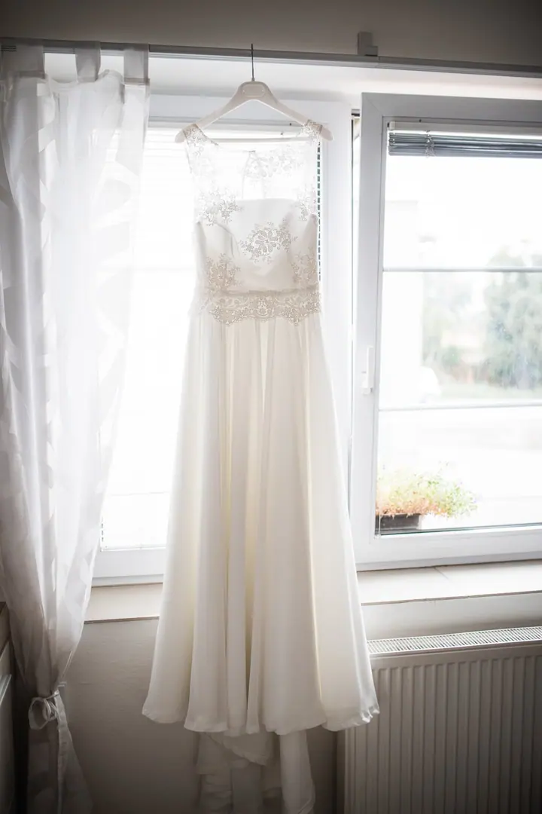
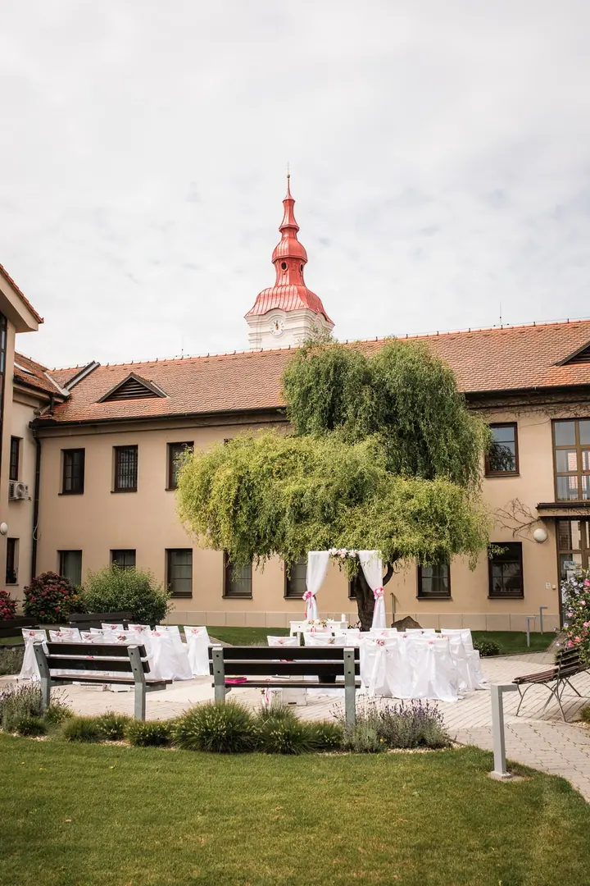
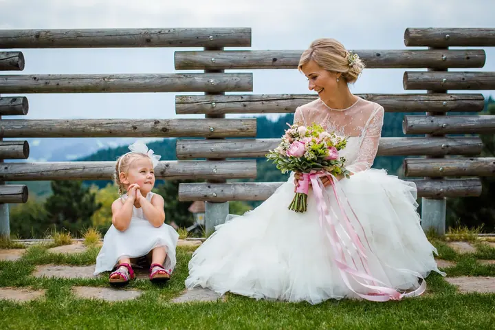
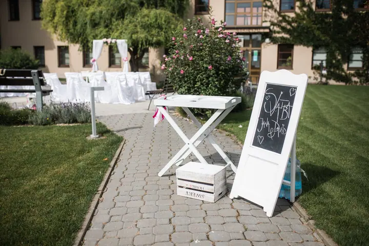
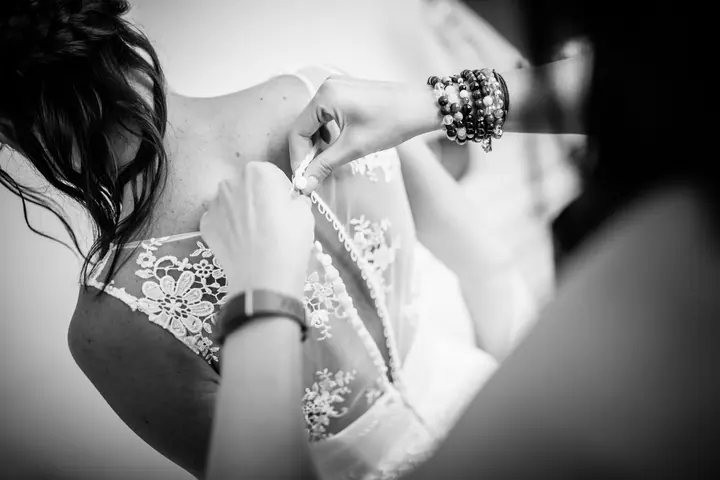
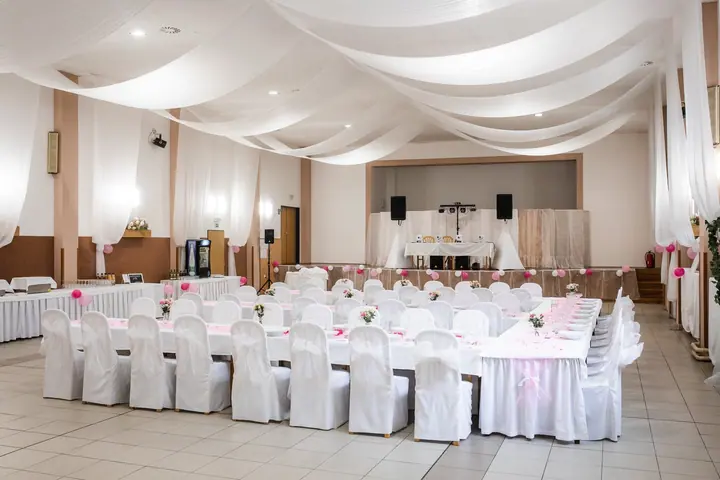

Svatební focení
Fotím svatby v Brně, na Jižní Moravě i po celé republice. Cena se řídí délkou focení, od dvouhodinového balíčku s obřadem a portréty až po celý den od příprav po první tanec.





Jmenuji se Vít Kovalčík a jsem svatební fotograf z Brna. Za víc než deset let jsem nafotil přes 200 svateb a vedle nich rád fotím portréty v ateliéru i rodiny venku.
Více o mně
„Sám jsem zvědavý, co jsem nafotil, takže zpracování neodkládám.“
— Vít Kovalčík
Fotím svatby v Brně, na Jižní Moravě i po celé republice. Cena se řídí délkou focení, od dvouhodinového balíčku s obřadem a portréty až po celý den od příprav po první tanec.
Kreativnější portrét v ateliéru, kde si můžeme hrát s neobvyklým světlem, emocemi i tajemstvím. Zkušenosti mít nemusíte, stačí dobrá nálada.
Venku pro rodiny s chodícími dětmi, v ateliéru pro batolata nebo černobílé siluety s bříškem. Za hodinu focení dostanete 20 vybraných a doladěných fotek.
Focení, které zdůrazňuje smyslnost a ženskost. Většinou v prádle, s elegantním světlem a výsledkem jako z časopisu.
Působím jako fotograf v Brně už dlouho a se svatbami mám prochozené jak Brno, tak velkou část Jižní Moravy. Fotím ale i kdekoli jinde v republice. Focení svateb mě baví a zkušenosti z předchozích mi pomáhají rychle reagovat v kdejaké situaci.
Jsem komunikativní a usmívám se i za foťákem. Během dne vám poradím s pózami i s nejasnostmi, které se na svatbě objeví. Mám rád spolehlivost, proto nosím dva fotoaparáty a oba ukládají fotky na dvě karty současně.
Kromě svateb fotím ve svém brněnském ateliéru umělecké portréty, módu, glamour a boudoir, a venku nebo ve studiu také rodiny a těhotenské focení. Fotky zpracovávám hned, protože jsem sám zvědavý, co jsem nafotil.
Napište mi datum vaší svatby a já vám dám vědět, jestli jsem volný. Rovnou probereme, jak dlouho chcete fotit.
Poznáme se a doladíme plány, třeba kam a kdy půjdeme fotit portréty. Pokud jste daleko, vyřešíme vše po mailu.
Fotím s pohodou a nenápadně, poradím s pózami a hlídám harmonogram. Na portréty se hodí „půjčit“ si z hostů pomocníka.
V 90 % případů odevzdávám vše do týdne. Fotky dostanete ke stažení, na USB disku v elegantní krabičce a v soukromé online galerii.
Záleží na délce focení. Dvě hodiny (zhruba 150 fotek) stojí 9 500 Kč, pět hodin (zhruba 300 fotek) 12 500 Kč a deset hodin (zhruba 450 fotek) 17 500 Kč. Každá hodina navíc je za 1 000 Kč.
V Brně je doprava zdarma. Jinde počítám 10 Kč za kilometr, a to jen cestu z domu na místo a zpět. Přejezdy během focení jsou zdarma.
Záleží jen na vás. Pokud chcete fotky z příprav, má smysl začít, když je vizáž zhruba v polovině.
Schůzka je fajn, abychom se poznali a doladili plány. Všechno ale jde vyřešit i po mailu, takže když jste z větší dálky, nemusíte se jí stresovat.